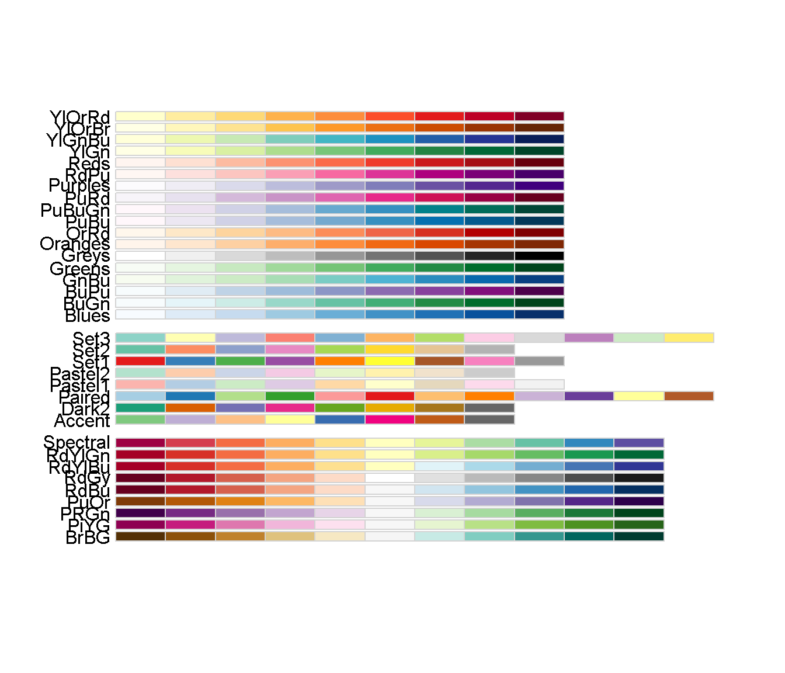

パッケージ
Packages <- c("ggplot2", "patchwork", "purrr")
lapply(Packages, library, character.only = TRUE)色を表示させる。
# 色合いを表示させる。
munsell::hue_slice("all")
# 2.5Gを表示
munsell::hue_slice("2.5G")使ってみる。
erupt <- ggplot(faithfuld, aes(waiting, eruptions, fill = density)) +
geom_raster() +
scale_x_continuous(NULL, expand = c(0, 0)) +
scale_y_continuous(NULL, expand = c(0, 0)) +
theme(legend.position = "none")
erupt +
erupt + scale_fill_gradient(
low = munsell::mnsl("2.5G 6/6"),
high = munsell::mnsl("2.5G 6/12")
)
# パレットを表示せせる
RColorBrewer::display.brewer.all()
使ってみる。
# データの準備
df <- data.frame(x = 1:3, y = 3:1, z = c(letters[1:3]))
area <- ggplot(df, aes(x, y)) +
geom_bar(aes(fill = z), stat = "identity") +
theme(legend.position = "none") +
labs(x = NULL, y = NULL)
Colors <- c("Set3", "Set2", "Set1")
# 複数の色合い同時に表示させる
Areas <-
purrr::map(.x = Colors, .f = ~{area + scale_fill_brewer(palette = .x)}) %>%
purrr::reduce(`+`)
Areas